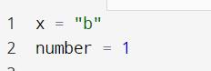
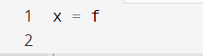
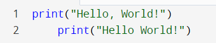

Welcome to Lesson 1. This lesson will involve the basics of Python and Python Syntax. Python was created in 1991 and is mainly used for software development, system scripting, and even web development in some cases.
As stated previously, the focus of this lesson is on basic Python syntax. A key topic to first introduction is basic declaration of variables and the differences from other languages. Unlike some languges, there is no actual function for variable declaration in Python. It's as simple as setting your variable name equal to the variable content, as shown below.
Invalid variable declarations would be similar to something below.
Unlike the above variables, this variable is attempting to assign itself to a variable that doesn't exist. If you wanted to initialize it equal to the letter "f" you would have to put quotation marks around it rather than just setting it equal to the letter on its own.
Another common beginner mistake is indentation, in Python, whitespace matters, as does indentation. Blocks of code must have the same level of spaces before the code itself. Otherwise, you will run into an indentation error. Additionally, indentation will help keep your code organized and learning Python will allow you to build good indentation habits which will translate over to your other language learning. Click on the two images below to see examples of good and bad indentation.
Python, while overall not complex, has a few intricacies that are easy to learn but also easy to mess up on in practice. With time, you will build the habits needed to be a successful Python programmer and be able to move on to more complex methods in Python.